← Índice de los 69 tutes de IDA
Tute 17 · Resolver el ejercicio de unpacking
▶ video afín (mismo autor, en x64dbg): «13 Unpacking 2 - OEP»
INTRODUCCIÓN AL REVERSING CON IDA PRO DESDE CERO PARTE 17.
RESOLVIENDO EL EJERCICIO PENDIENTE.
Llegamos a la parte 17 y se supone que al menos debían intentar resolver el ejercicio.
http://ricardonarvaja.info/WEB/INTRODUCCION%20AL%20REVERSING%20CON%20IDA%20PRO%20DESDE%20CERO/EJERCICIOS/
El mismo es muy simple y hay que desempacarlo como vimos en las partes anteriores y luego reversearlo para hallar la solución del mismo y si es posible hacer un keygen en Python.
En este caso vamos a cambiar un poco y voy a desempacarlo en forma remota a una máquina virtual que tengo de Windows 10 en VMWare Workstation.
DESEMPACANDO REMOTO.
La máquina principal para debuggear remoto es donde tengo corriendo el IDA en este caso es Windows 7 pero podría ser cualquier Windows, Linux, IOS etc donde tengamos corriendo el IDA instalado.
Igual todas las restricciones que ocurran al desempacar remoto serán las mismas que si el programa lo estuviera debuggeando en Windows 10 directamente, ya que allí es donde correrá el archivo empacado, que en este caso se llama PACKED_PRACTICA_1.exe.
Para abreviar, de acá en más a la maquina principal donde tengo el IDA instalado, la llamare “PRINCIPAL” y a la imagen de Windows 10 que tengo corriendo en un VMWARE le llamare “TARGET”.
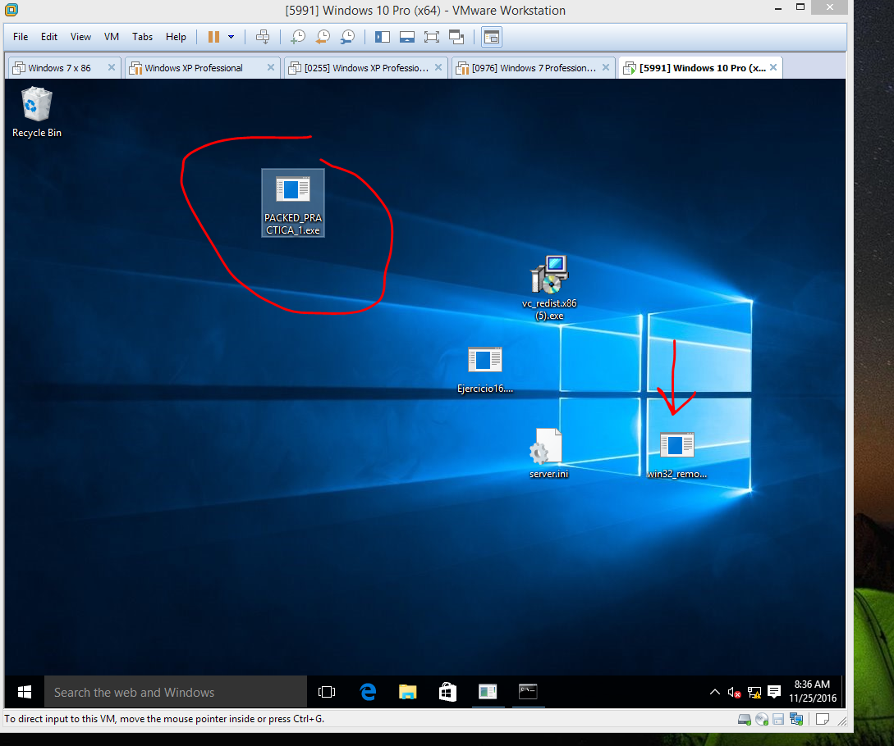
Allí está el archivo empacado en el TARGET, y debo copiar también allí de la carpeta donde tengo instalado el IDA en la PRINCIPAL, el servidor remoto llamado win32_remote.exe ya que mi sistema Windows 10 es de 64 bits, pero el programa empacado es de 32 bits, así que debo correr el server de 32 bits.
Copiamos también el ejecutable PACKED_PRACTICA_1.exe a la PRINCIPAL para realizar el análisis en forma LOCAL y lo abrimos en el LOADER poniendo la tilde en MANUAL LOAD para que lo analice y cargue todas las secciones.
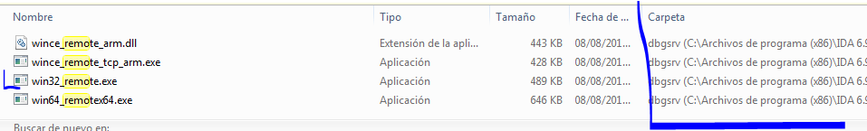
Allí estamos en el LOADER mostrando el Entry Point del programa empacado, aun no arrancamos el DEBUGGER.
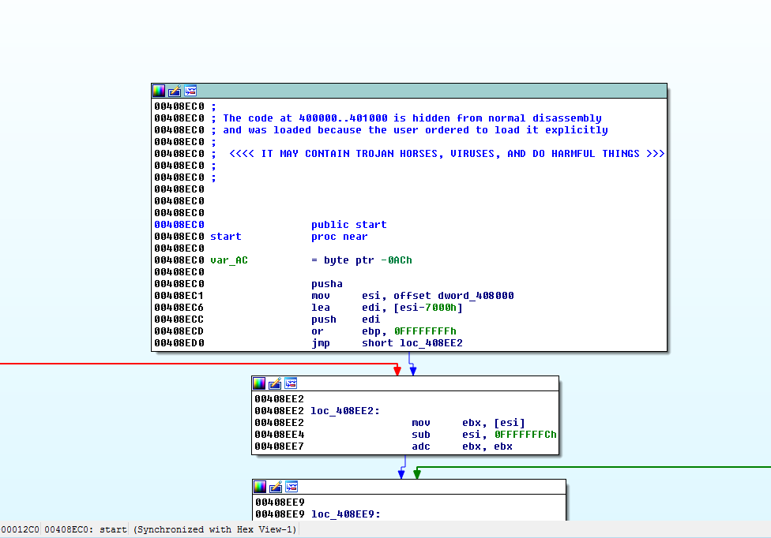
Es muy importante no renombrar el IDB o sea que si el ejecutable se llama PACKED_PRACTICA_1.exe en la PRINCIPAL, al analizar guardara en la misma carpeta un IDB y debería llamarse PACKED_PRACTICA_1.idb y no de otra forma, sino habrá problemas para reconocer que el proceso remoto corresponde al mismo ejecutable analizado localmente.
Arrancamos el server remoto win32_remote.exe en el TARGET.
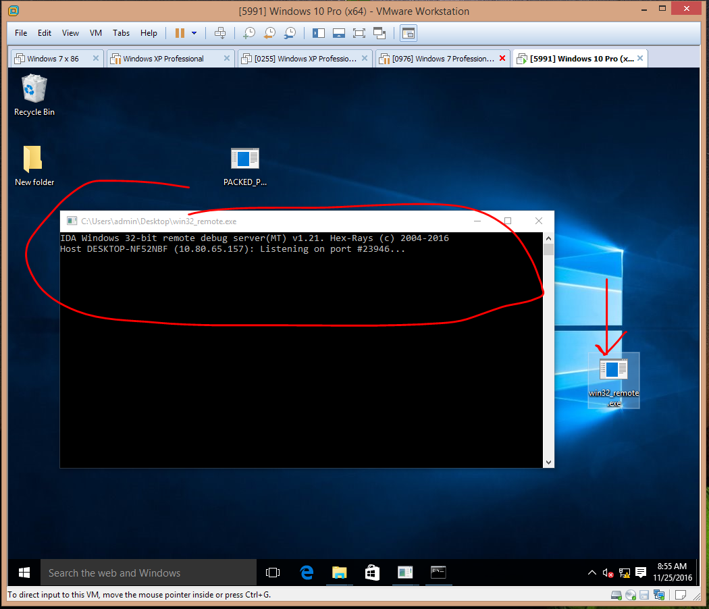
Allí arranca el server remoto de IDA y escuchara en el IP y puerto que dice allí, en mi caso IP 10.80.65.157 y puerto 23946, copien los datos que muestra el de ustedes.
Cambien el debugger a REMOTE WINDOWS DEBUGGER.
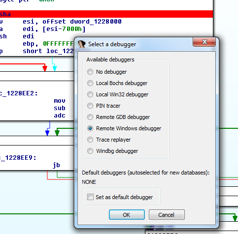
En PROCESS OPTIONS ponen el IP y PORT del server de IDA y como necesitamos arrancarlo desde el inicio para desempacar ya que no nos podemos atachear porque ya lo encontraríamos corriendo, tendremos que arreglar las rutas que muestra allí, para que coincidan con la ubicación del ejecutable en el TARGET.
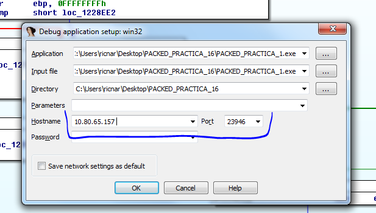
En mi caso el desempacado en el TARGET está en el DESKTOP y allí el path en mi caso será C:\Users\admin\Desktop\PACKED_PRACTICA_1.exe
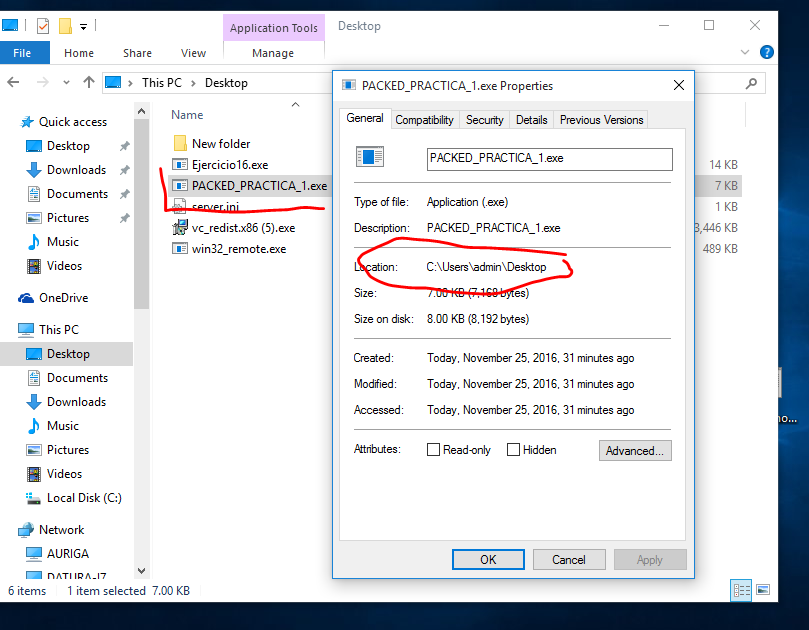
Así que lo arreglo.
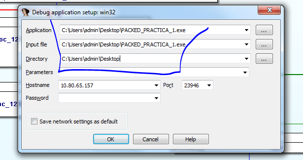
Ahora sí le damos a START PROCESS y parara en el entry point de esta forma están detenidos en el ENTRY POINT del empacado en MODO DEBUGGER.
Lo que si podemos apreciar que dado que el ejecutable tiene randomizacion las direcciones de donde se cargan varían cada vez que se reinicia, por lo cual es importante desde que lo arrancamos, dumpeamos y reparemos, la IAT sea el mismo proceso sin cerrarlo para que no cambien las direcciones entre tiro y tiro.
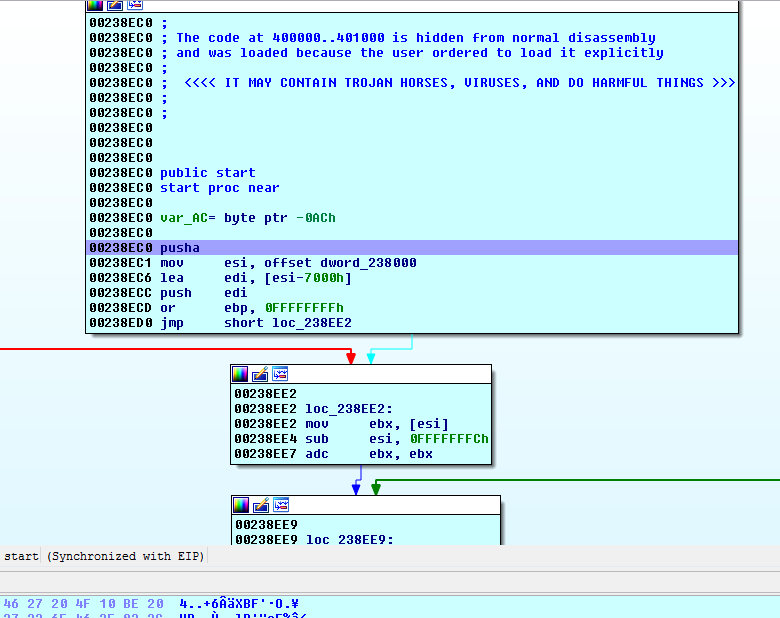
Ahora vamos a mirar la primera sección de código después del header en SEGMENTS.
En mi caso veo que se inicia en 231000 y termina en 238000.
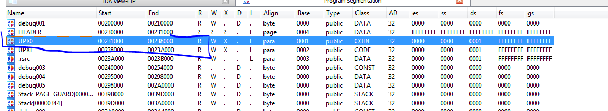
Si solo hiciéramos un SEARCH FOR TEXT para hallar el POPAD o POPA en este caso, hallaríamos el que se ejecuta justo antes de saltar al OEP.
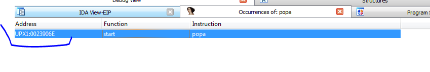
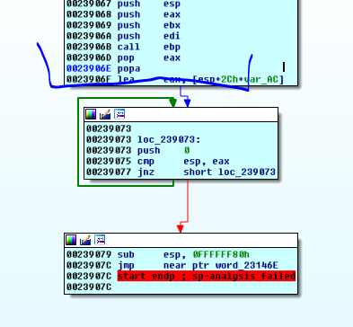
Allí ya sabríamos que el OEP está en 0x23146e pero puedo hallarlo poniendo un BREAKPOINT en EJECUCION que abarque toda la primera sección.
Voy al inicio de la misma en 0x231000.
Allí veo los datos que saca del header, obviamente las direcciones no coinciden por la randomizacion, la imagebase no es 0x400000 pero el VIRTUAL SIZE si es 0x7000 o sea el tamaño de la sección en la memoria coincide ya que empieza en 0x231000 y termina en 0x238000 la diferencia es 0x7000 bytes.
.
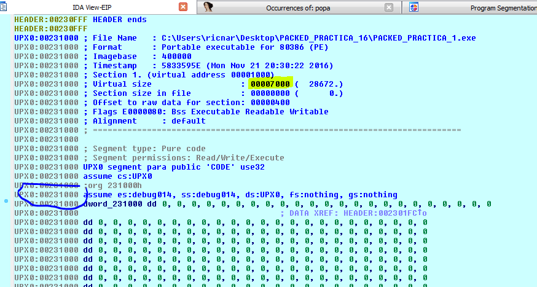
Ali que pongo un breakpoint con F2 allí en el inicio de la sección, en mi caso 0x231000 o la dirección que corresponda en su máquina de largo 0x7000.
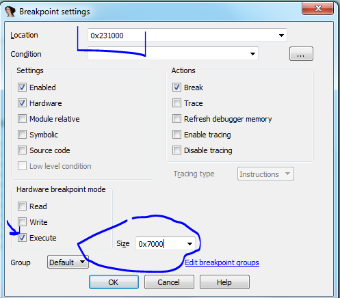
Borro todos los otros breakpoints que quede solo este y apreto F9 para que corra.
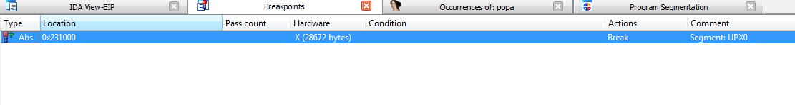
Allí se detiene y coincide con la dirección que habíamos visto que era el OEP, ahora borro el BREAKPOINT para quitar lo rojo.
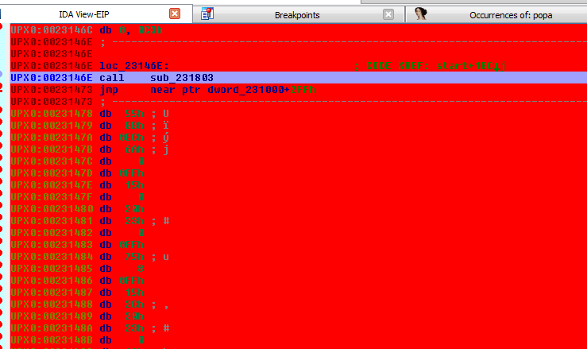
Hago click derecho en la esquina inferior izquierda REANALIZE PROGRAM.
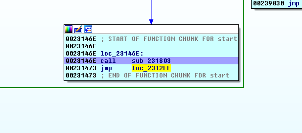
En este caso lo tomo como si fuera un bloque del mismo STUB por eso no le puso sub_ de prefijo y lo dejo como loc_ igual no hay problema.
Ahora edito el script dumpeador en Python para que muestre la ImageBase real mía y el final del archivo.
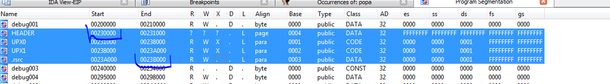
O sea que la imagebase en mi caso es 0x230000 y el final 0x23b000.
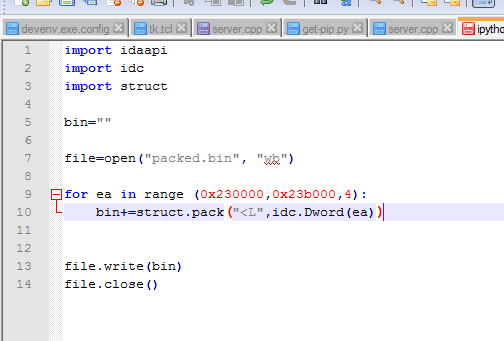
Allí cambio lo valores y lo corro desde FILE-SCRIPT-FILE.
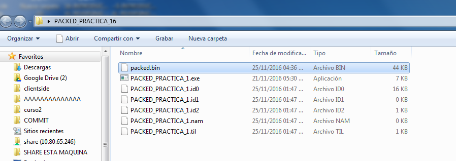
Allí lo guarda ya que el script corre en la maquina PRINCIPAL.
Lo abro con el PEEDITOR y le hago el DUMPFIXER.
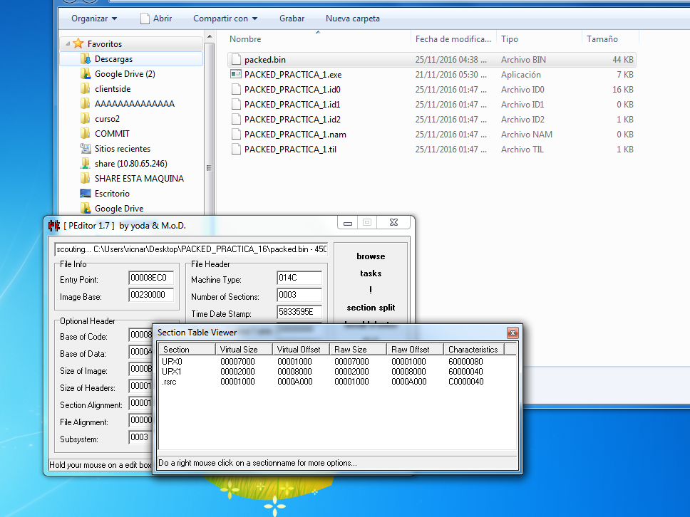
Lo renombro como exe.
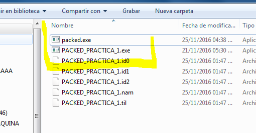
Ya aparece con el mismo icono del empacado ahora abro el Scylla en la TARGET y copio el packed.exe allí.
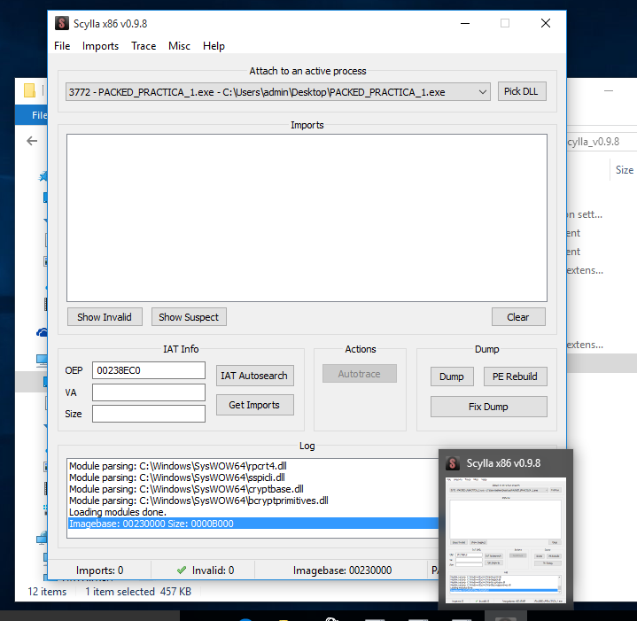
Ahora le doy a IAT AUTOSEARCH.
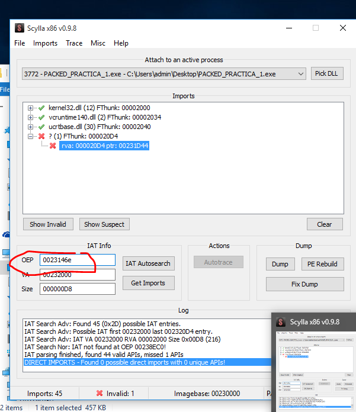
Le cambio el OEP por 0x23146e que habíamos hallado.
Veo que hay una sola entrada INVÁLIDA luego del IAT AUTOSEARCH y GET IMPORTS.
Sumando la imagebase más la entrada invalida
Python>hex(0x230000+0x20d4)
0x2320d4
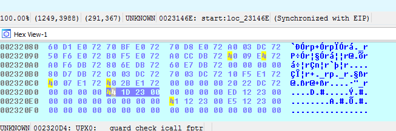
Veo que parece ser ruido no creo que sea parte de la IAT verifiquemos mirando en el listado si esa dirección tiene referencias.
Vemos que si tiene referencias
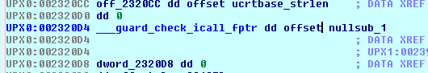
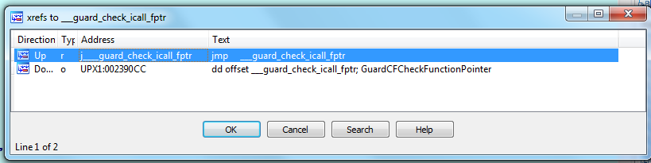
Veamos donde va.
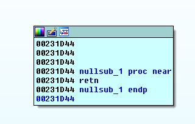
Vemos que termina yendo a un RET.
Veo que no es un problema ya que va a un valor fijo del programa que es un RET no a una api, así que hare en la entrada invalida CLICK DERECHO-CUT THUNK para eliminarla de la IAT.
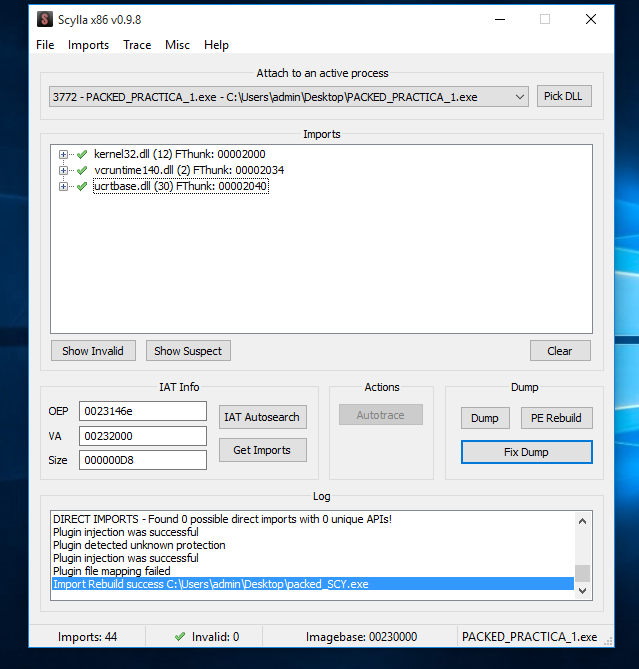
Ahora hago FIX DUMP del packed.exe y me queda el packed_SCY.exe sin embargo ese aun no corre y es porque en el dumpeado no se reallocan las direcciones que fueron creadas en runtime que no pertenecen a la IAT y cambian siempre al arrancar, así que le quitare la randomizacion lo abro al packed_SCY.exe en el IDA con manual load cargando el header también y voy al mismo.
DLL CHARACTERISTICS Y RANDOMIZACION.
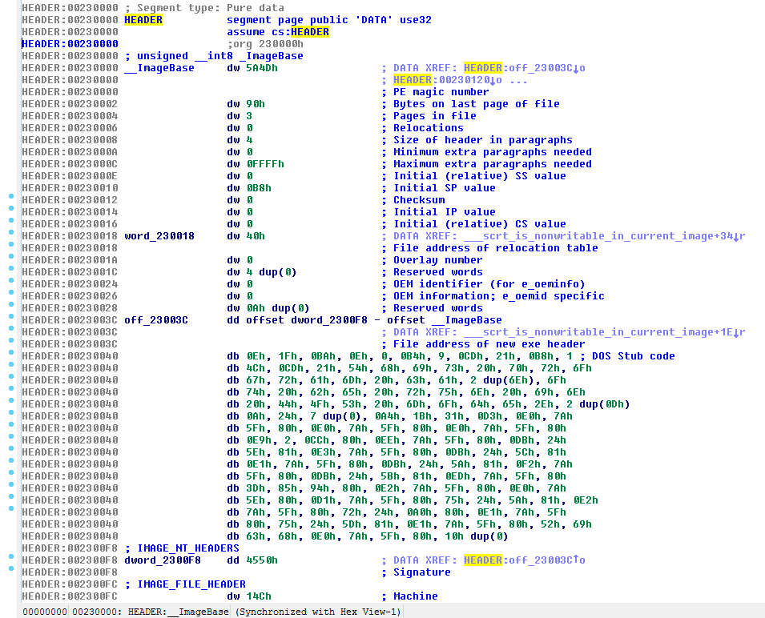
Allí esta DLL CHARACTERISTICS en el suyo estará diferente de cero porque yo ya lo cambie.
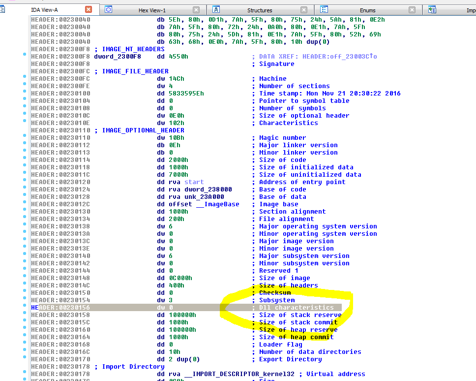
Con el menú EDIT-PATCH PROGRAM-CHANGE WORD lo cambian a cero.
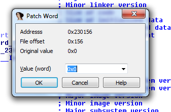
Y luego lo guardan ahí mismo con APPLY PATCHES TO INPUT FILE.
Y listo.
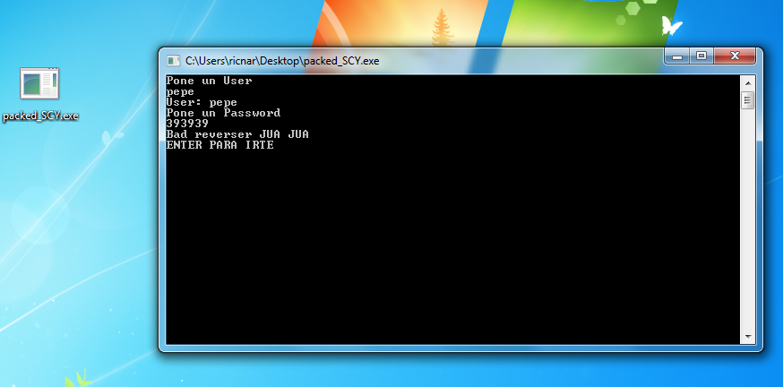
Ya está desempacado en la parte 18 lo reversearemos.
Hasta la parte 18
Ricardo Narvaja